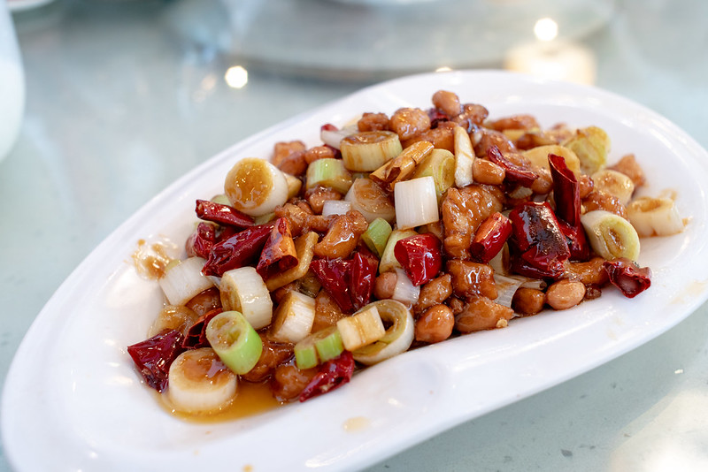

Home
Kung Pao Chicken (宫保鸡丁)

Photo shot by George N
Description :
A spicy, stir-fried Sichuan dish made with chicken, peanuts, vegetables, and chili peppers.
Ingredients :
- Chicken
- Sichuan pepper
- Chinese vinegar
- Dried chillies
- Cornflour
- Peanuts
- Sesame oil
- Dark soy sauce
- Light soy sauce
- Sugar
- Garlic
- Ginger
- Green Onion
- Chinese cooking wine
Steps :
- Make the Kung Pao sauce: Mix the soy sauce, vinegar and sugar in a bowl.
- Prep the chicken! With a sharp knife, cut the boneless, skinless chicken breast into uniform strips. TIP: This is easier to do if your chicken is slightly frozen.
- Cook the chicken until crispy! Using a big, sturdy skillet or a wok.
- Stir-fry! Stir-fry the bell peppers, add the scallions, cashews, ginger, garlic, and dried chili peppers. Stir fry all of that for a minute or two, and then stir in the Kung Pao sauce and cooked chicken.